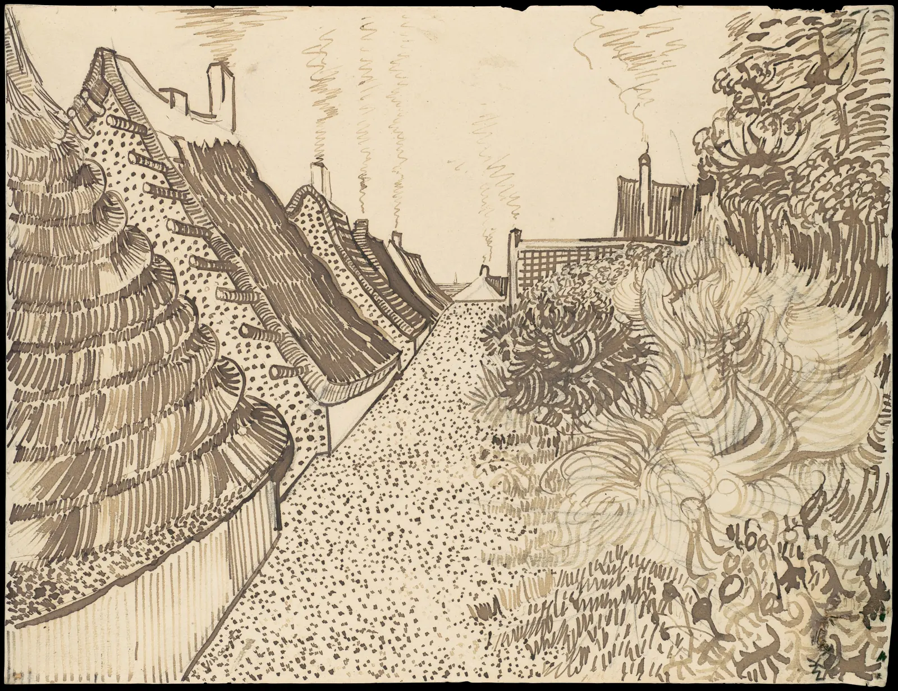
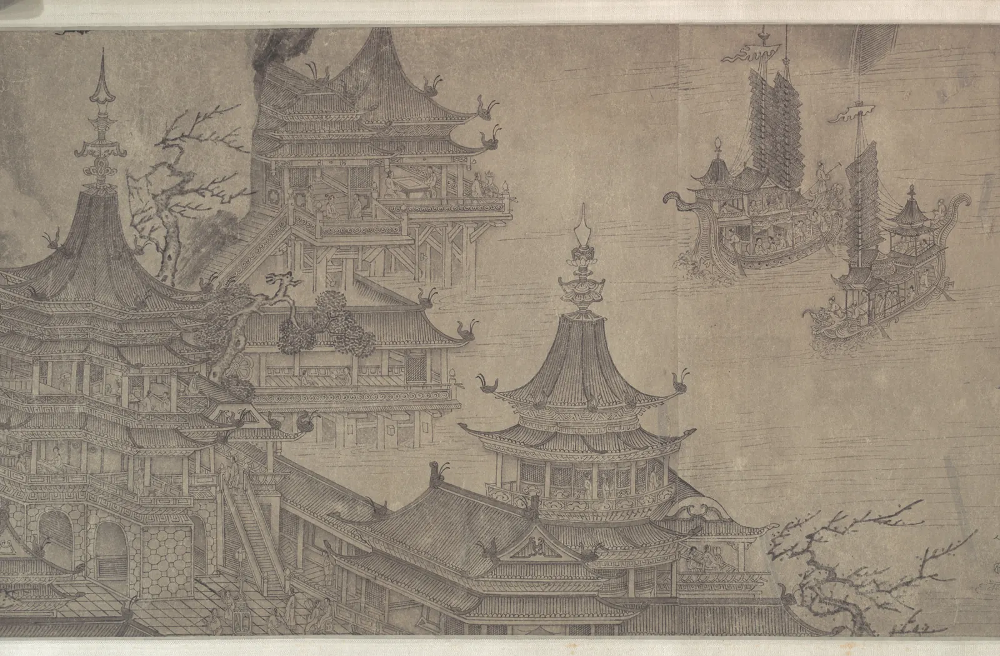

드로잉의 지도
책상 위에 책 한 권을 놓고 "책을 그려 보세요"라고 하면 많은 사람이 반듯한 직사각형부터 그린다. 그런데 의자에 앉은 눈에 보이는 책은 직사각형이 아니다. 먼 쪽 변이 짧고, 네 모서리 중 어느 것도 직각이 아니다. 우리는 책이 직사각형이라는 것을 알고, 손은 그 앎을 그린다. 이 장은 아는 것과 보이는 것 사이의 이 틈에서 출발해, 드로잉을 배우는 네 갈래(보기, 공간, 빛, 몸)와 앞으로 열네 장에서 하나씩 풀어 갈 질문들을 한 장의 지도 위에 펼친다.
- 아는 모양(기호)과 보이는 모양(투영)이 왜 다른지 설명하고, 그 차이를 직접 만들어 본다.
- 드로잉이 무엇이고, 이 책이 왜 "손보다 눈"에서 시작하는지 안다.
- 평면에 공간을 세우는 선 원근(투시)과, 동아시아 회화의 평행 투영이 서로 다른 목적을 가진 방법이라는 것을 본다.
- 빛이 윤곽에 입체를 입히는 방식과, 몸을 그릴 때 쓰는 비례 규범이 평균이 아니라 관습이라는 것을 안다.
- 보기·공간·빛·몸 네 갈래로 이 책의 지도를 그리고, 서윤의 봄 과제를 시작한다.
아는 모양, 보이는 모양
어린아이에게 탁자와 컵을 그려 보라고 하면 대개 비슷한 그림이 나온다. 탁자 윗면은 반듯한 직사각형, 컵의 입구는 동그란 원이다. 틀린 그림이 아니다. 탁자 윗면은 실제로 직사각형이고 컵의 입구는 실제로 원이다. 아이는 물건에 대해 아는 것을 가장 알아보기 쉬운 모양으로 그렸다. 이렇게 물건을 대표하는 단순한 모양을 이 책에서는 기호(Symbol, schema)라고 부른다. 그 물건이라는 것을 알아보게 해 주는, 머릿속에 저장된 표준 모양이다.
그런데 탁자 앞 의자에 앉은 눈에 들어오는 모양은 다르다. 탁자 윗면은 먼 쪽이 좁은 사다리꼴이고, 컵의 입구는 납작한 타원이다. 눈은 물건의 실제 모양이 아니라, 물건에서 출발한 빛이 눈동자 한 점으로 모여 만든 투영을 본다. 그래서 같은 물건도 어디서 보느냐에 따라 모양이 달라진다.
얼마나 다른지 직접 본다. 아래 시뮬레이터의 왼쪽은 이 책이 소개하는 안내 책자와 같은 A5 크기(148×210 mm)의 책을 위에서 똑바로 내려다본 "아는 모양"이고, 오른쪽은 같은 책을 탁자 앞에 앉아 비스듬히 본 "보이는 모양"이다. 슬라이더로 내려다보는 각도를 바꾸고, 캔버스를 좌우로 끌어 책을 돌린다.
책 한 권의 두 얼굴
보이는 모양의 모서리는 하나도 직각이 아니다. 그런데 눈은 그 사다리꼴을 보면서도 "직사각형 책"이라고 느낀다. 뇌가 투영된 모양에서 물건의 실제 모양을 거꾸로 짐작해 내기 때문이다. 이 능력을 모양 항상성(Shape constancy)이라고 한다. 세상을 알아보는 데는 아주 쓸모 있지만, 그림을 그리려는 사람에게는 걸림돌이 된다. 손에 쥔 연필은 짐작해 낸 직사각형 쪽으로 끌려가기 때문이다. 드로잉을 배운다는 것은 상당 부분, 이 짐작을 잠시 멈추고 눈에 들어온 모양을 그대로 보는 연습이다.
드로잉은 손보다 눈의 일이다
드로잉(Drawing)은 연필, 펜, 목탄, 붓 같은 도구로 주로 선과 명암을 써서 형태를 평면에 옮기는 일이다. 물감으로 화면을 덮는 회화와 달리 종이의 바탕이 많이 남고, 선 하나하나가 그린 사람의 판단을 그대로 드러낸다. 우리말로는 소묘(素描)라고도 한다. 완성작을 위한 밑그림일 때도 있고, 그 자체로 완성된 작품일 때도 있다.
잘 그린 드로잉을 보면 손재주에 먼저 감탄하게 된다. 그런데 손이 하는 일은 생각보다 단순하다. 정해진 자리에서 정해진 자리까지 선을 긋는 것이다. 어려운 것은 그 "정해진 자리"를 아는 일이다. 선이 어디서 시작해 어디서 끝나는지, 어느 쪽으로 얼마나 기울어지는지, 다른 선보다 얼마나 긴지. 이것은 눈과 판단의 일이다. 그래서 이 책은 손의 연습보다 보는 법에서 시작한다.

반 고흐의 골목 그림에는 이 책이 다룰 거의 모든 것이 들어 있다. 길이 멀어지며 좁아지는 투시, 지붕 덩어리를 단순한 입체로 본 눈, 선의 밀도로 만든 명암, 그리고 선 하나하나의 표정. 그러면서도 자로 잰 그림처럼 딱딱하지 않다. 처마선은 정확히 한 점으로 모이지 않고, 덤불은 아무 규칙도 따르지 않는 듯 자유롭다. 규칙을 알고 그 위에서 자유롭게 움직이는 것, 이 책이 바라는 드로잉이 그런 것이다.
네 갈래: 보기, 공간, 빛, 몸
드로잉을 배우는 길은 크게 네 갈래로 나눌 수 있다. 첫째는 보기다. 아는 것 대신 보이는 것을 보고, 그 모양과 비례를 재고, 선으로 옮기는 법이다. 둘째는 공간이다. 평평한 종이 위에 깊이를 세우는 법으로, 눈높이와 소실점, 타원, 단순한 입체로 생각하기가 여기에 든다. 셋째는 빛이다. 빛이 형태에 닿아 만드는 밝고 어두운 단계, 그림자, 멀리 있는 것을 흐리게 하는 공기를 다룬다. 넷째는 몸이다. 사람의 비례, 뼈와 근육의 덩어리, 움직임을 잡는 법이다.
네 갈래는 차례로 쌓인다. 보기가 없으면 투시 규칙을 알아도 그림이 어색하고, 공간을 모르면 명암을 넣을 입체가 서지 않고, 빛과 입체를 모르면 사람의 몸도 납작해진다. 하지만 순서가 엄격한 것은 아니다. 이 장의 나머지는 세 갈래(공간, 빛, 몸)를 하나씩 맛보고, 마지막에 넷을 한 장면에 겹친다. 첫 갈래인 보기는 이미 앞 절에서 시작했다.
공간: 평면에 깊이를 세운다
종이는 평평한데 그림 속 골목은 멀리 이어진다. 이 착각을 만드는 가장 강력한 도구가 선 원근법(Linear perspective), 흔히 투시라고 부르는 방법이다. 원리는 앞의 책 시뮬레이터와 같다. 물건의 각 점에서 눈으로 오는 빛을, 눈 앞에 세운 유리판(화면)이 가로챈다고 생각한다. 유리판 위에 찍힌 점들을 이으면 그 자리에서 본 그림이 된다.
이 식 하나가 이 책 공간 부의 거의 전부다. 수평한 평행선들의 소실점은 모두 눈높이를 지나는 가로선 위에 놓이고, 그 선을 수평선(Horizon line) 또는 눈높이선이라고 부른다(4장). 건물의 모서리를 비스듬히 마주하면 소실점이 둘이 되고(5장), 원은 타원이 된다(6장).
이 책의 케이스에서 윤서윤이 처음 그린 서점 외관은 바로 이 지점에서 막혔다. 아래 시뮬레이터의 경계선 왼쪽은 서윤처럼 창문을 모두 "아는 모양", 곧 정면에서 본 직사각형으로 그린 건물이고, 오른쪽은 같은 건물을 골목 모퉁이에서 본 모양을 투시로 계산한 것이다. 경계선을 끌어 두 그림을 비교하고, 슬라이더로 건물을 바라보는 각도와 거리를 바꾼다.
납작한 외관, 서 있는 외관
왼쪽 그림이 이상한 이유는 창문 하나하나가 틀려서가 아니라, 창문마다 다른 자리에서 본 모양이 한 화면에 섞였기 때문이다. 앞면은 앞에서, 옆면은 옆에서 본 모양이다. 투시는 그림 전체를 한 자리에서 본 한 순간으로 묶는 약속이다. 모든 평행선이 같은 소실점으로 모이는 것은 그 약속의 결과다.
선 원근만이 답은 아니다
선 원근법은 15세기 이탈리아 피렌체에서 건축가 브루넬레스키(Filippo Brunelleschi)의 실험과 알베르티(Leon Battista Alberti)의 『회화론』(De pictura, 1435)을 거치며 체계를 갖췄다고 알려져 있다. 그 뒤 서양 회화는 오랫동안 이 방법을 공간 표현의 기본으로 삼았다. 하지만 "제대로 된 그림은 모두 한 점으로 모여야 한다"는 생각은 한 지역, 한 시대의 약속일 뿐이다.

이렇게 평행선을 평행한 채로 두는 방법을 평행 투영(Parallel projection)이라고 한다. 깊이 방향을 비스듬한 방향으로 옮겨 그리기 때문에 먼 것도 작아지지 않는다. 동아시아의 궁궐도, 풍속화, 일본의 이야기 두루마리에서 자주 볼 수 있다. 오늘날에는 건축·제품 도면의 등각 투영(Isometric projection)이나 게임 그래픽에서도 쓴다. 두 방법은 무엇을 중요하게 여기는지가 다르다. 선 원근은 "한 사람이 한 자리에서 본 순간"을, 평행 투영은 "누가 어디서 보든 같은 크기와 관계"를 지킨다. 두루마리처럼 화면이 옆으로 아주 길면, 한 점으로 모이는 투시는 오히려 어색해진다. 보는 사람이 걸으며 보기 때문이다.
아래 시뮬레이터는 같은 집들을 두 방식으로 그린다. 슬라이더를 밀어 선 원근에서 평행 투영으로 천천히 바꾸고, 캔버스를 좌우로 끌어 보는 사람의 자리를 옮긴다.
한 점으로 모일까, 나란히 갈까
어느 쪽이 "맞는" 그림인지는 정해져 있지 않다. 서점 외관을 한 장의 그림으로 보여 주려면 선 원근이 자연스럽고, 골목 전체의 가게들을 한 줄의 지도처럼 펼치려면 평행 투영이 더 많은 것을 보여 준다. 이 책은 투시의 계산을 자세히 다루지만, 그것을 유일한 정답으로 다루지는 않는다. 동아시아 산수화의 삼원법처럼 한 화면에 여러 시점을 섞는 방법은 10장에서 다시 만난다.
빛: 윤곽에 입체를 입힌다
원 하나를 그려 놓으면 그것은 동전일 수도, 접시일 수도, 공일 수도 있다. 윤곽선만으로는 그 안이 평평한지 둥근지 알 수 없다. 공처럼 보이게 하는 것은 빛이다. 빛을 받는 쪽은 밝고, 등진 쪽은 어둡고, 그 사이에는 밝음이 차츰 줄어드는 단계가 있다. 그리고 바닥에는 그림자가 떨어진다. 화가들은 이 단계에 이름을 붙여 왔다. 가장 밝은 하이라이트(Highlight), 밝은 면에서 어두운 면으로 넘어가는 명암 경계(Terminator, core shadow), 어두운 면 안에서 바닥의 빛을 되받아 살짝 밝아지는 반사광(Reflected light), 그리고 바닥에 드리운 투영 그림자(Cast shadow)다.
아래 시뮬레이터에서 원 하나를 공으로 만든다. 처음에는 윤곽만 보인다. 표시 방식을 바꾸고, 해 손잡이를 끌어 빛을 옮긴다.
원 하나가 공이 되기까지
빛은 형태를 드러내는 도구이면서 그림의 분위기를 정하는 도구이기도 하다. 위에서 오는 빛은 형태를 차분하고 분명하게, 낮게 깔린 빛은 길고 극적인 그림자를, 역광은 윤곽을 빛나게 한다. 빛의 방향을 바꿔도 그림자는 아무렇게나 생기지 않는다. 해와 물체의 꼭짓점을 잇는 직선이 바닥과 만나는 곳에 정확히 떨어진다. 9장에서는 이 기하학으로 서점 처마의 그림자를 그린다. 명암을 몇 단계로 나눌지는 ColorBook의 명도 장과 이어진다.
몸: 규범과 실제
사람을 그릴 때 흔히 듣는 말이 "머리 몇 개 키"다. 키를 머리 길이로 나눈 값을 등신(Head count)이라고 하고, 많은 드로잉 교재가 어른을 7~8등신 정도로 잡아 그리라고 가르친다. 고대 그리스의 조각가 폴리클레이토스(Polykleitos)가 이상적인 비례를 글과 조각으로 남겼다고 전하고, 로마의 비트루비우스(Vitruvius)는 『건축서』에서 사람의 몸을 비례의 본보기로 썼다. 이런 이상적 비례의 약속을 카논(Canon)이라고 부른다.
중요한 것은 카논이 평균이 아니라 관습이라는 점이다. 실제 사람들의 몸은 나이, 성별, 체격, 개인에 따라 훨씬 다양하다. 어린아이는 몸에 비해 머리가 커서 등신 수가 작고, 패션 일러스트는 일부러 다리를 늘려 9등신 이상으로 그리기도 한다. 아래 시뮬레이터에서 같은 키의 인물을 여러 등신으로 바꿔 본다.
머리 몇 개 키
등신 규범은 그림을 시작할 때 쓰는 자일 뿐, 그리려는 사람에게 맞춰야 할 틀이 아니다. 서점의 단골손님을 그린다면 그 사람의 실제 비례가 먼저다. 등신 규범의 역사와 실제 몸의 다양성은 11장, 뼈와 근육의 덩어리는 12장, 움직임은 13장에서 다룬다. 이 책의 인체 그림은 모두 직접 그린 단순한 마네킹과 도식이다.
이 책의 지도
지금까지 맛본 질문들은 각각 한 장씩의 주제가 된다. 책은 네 부로 나뉜다. 보기는 보이는 대로 보는 법과 선으로 옮기는 법(2·3장), 공간은 투시와 타원, 단순한 입체로 생각하기(4~7장), 빛은 명암의 단계, 그림자, 풍경의 대기(8~10장), 몸은 비례, 구조, 움직임(11~13장)이다. 마지막의 드로잉 실험실(14장)에서는 한 장면에 눈높이, 소실점, 빛, 사람을 함께 놓고 밑그림을 세운다.
마지막 시뮬레이터는 이 지도를 한 장면에 겹친다. 골목 모퉁이의 2층 서점과 그 앞에 선 사람이다. 위의 단추로 네 갈래 중 하나를 고르면 그 갈래의 눈으로 장면을 본다. 수평선(왼쪽 끝 손잡이)을 위아래로 끌면 보는 사람의 눈높이가 바뀌고, "빛"이나 "모두"에서는 하늘의 해를 끌어 옮길 수 있다.
한 장면, 네 갈래
같은 장면도 어느 갈래의 눈으로 보느냐에 따라 먼저 보이는 것이 다르다. 실제로 그릴 때는 이 순서를 대략 따른다. 먼저 큰 모양을 보고(보기), 수평선과 소실점으로 공간의 뼈대를 세우고(공간), 그 안에 사람을 알맞은 크기로 세우고(몸), 마지막으로 빛의 방향을 정해 명암과 그림자를 넣는다(빛). 이 책은 그 순서를 정답이 아니라 출발점으로 남긴다. 무엇을 먼저 볼지는 결국 그림이 무엇을 전하려는가에 달렸다.
서윤의 봄 스케치북
종이처럼 납작한 서점
가을에 책방 E의 색을 정하고(ColorBook) 겨울에 쇼윈도와 포스터를 짠(CompositionBook) 윤서윤에게, 주인이 봄 일을 부탁했다. 서점이 처음으로 펴내는 동네 안내 책자 「골목 산책」(A5, 16쪽)에 들어갈 펜 드로잉 열두 점이다. "사진보다 그림이 동네 같아서요." 주인은 그렇게 말하며, 필요하면 자기도 모델을 서 주겠다고 했다.
서윤은 그날 저녁 골목 모퉁이에 서서 서점 외관을 펜으로 바로 그렸다. 2층짜리 건물의 두 면, 1층의 유리문과 진열창, 2층의 창 네 개. 창은 모두 반듯한 직사각형이었고 앞면과 옆면은 같은 높이의 직사각형 두 개로 나란히 붙어 있었다. 집에 와서 다시 보니 건물이 종이를 접어 세운 것처럼 납작했다. 위 "납작한 외관" 시뮬레이터의 경계선 왼쪽, 그 그림이었다. "보이는 대로 그렸다고 생각했는데, 창문을 그릴 때는 창문을 안 보고 있었나 봐요."
다음 토요일(2027년 3월 6일), 멘토인 화가 한도경이 서점 2층에서 드로잉 모임을 열었다. 서윤의 그림을 본 도경은 고칠 곳을 짚는 대신 서윤을 창가에 앉히고 말했다. "그리기 전에 먼저 오래 봐라. 오늘은 펜을 꺼내지 말고." 도경은 서윤의 펜을 가방에 넣고 연필 한 자루를 건넸다. 대신 서윤은 도경에게 휴대폰으로 스케치를 찍어 밝기만 남겨 보는 법을 알려 주었다. 두 사람은 열두 점을 이 책의 순서대로 하나씩 그려 나가기로 했다.
핵심 정리
- 우리는 물건에 대해 아는 모양(기호)을 그리기 쉽다. 눈에 보이는 모양은 물건에서 눈 한 점으로 모인 빛의 투영이라서, 보는 자리에 따라 달라진다.
- 뇌는 투영된 모양에서 실제 모양을 짐작해 낸다(모양 항상성). 세상을 알아보는 데는 쓸모 있지만, 그림을 그릴 때는 손을 아는 모양 쪽으로 끌고 간다.
- 드로잉의 어려움은 손보다 눈과 판단에 있다. 이 책은 보기·공간·빛·몸 네 갈래로 그 판단을 하나씩 익힌다.
- 선 원근은 깊이로 나누는 투영(\(x' = fX/Z\))으로, 그림 전체를 한 자리의 한 순간으로 묶는다. 평행 투영은 크기와 관계를 지키며, 두루마리처럼 걸으며 보는 화면에 어울린다. 어느 하나가 유일한 정답은 아니다.
- 윤곽만으로는 입체가 드러나지 않는다. 빛을 받는 정도에 따른 명암의 단계와 투영 그림자가 형태를 알려 준다.
- 등신 같은 인체 비례 규범은 평균이 아니라 관습이다. 시작할 때 쓰는 자일 뿐, 실제 사람의 몸은 훨씬 다양하다.
확인 퀴즈
1. 탁자 앞 의자에 앉아서 보면 직사각형 탁자 윗면이 먼 쪽이 좁은 사다리꼴로 보인다. 가장 알맞은 설명은?
2. 서윤의 첫 서점 외관 스케치는 앞면과 옆면의 창이 모두 반듯한 직사각형이어서 건물이 납작해 보였다. 왜 그런가?
3. 「대명궁도」처럼 멀리 있는 건물도 가까운 건물과 같은 크기로, 평행한 모서리를 끝까지 나란하게 그린 그림에 대한 설명으로 가장 알맞은 것은?
4. 드로잉 교재가 어른을 "8등신"으로 그리라고 할 때, 이 숫자를 대하는 가장 알맞은 태도는?